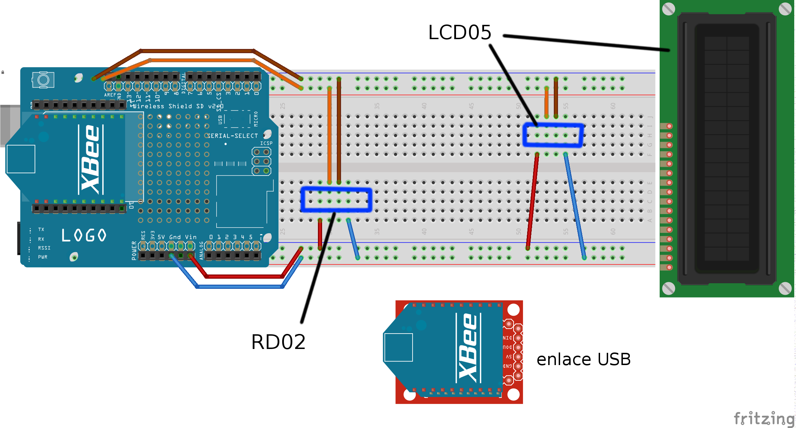

Proyecto para la Actividad Práctica 4 de Sistemas Empotrados y de Tiempo Real, en la ULPGC.
Por Diego Sáinz de Medrano.
Se han usado las siguientes piezas de hardware aparte de la placa Arduino Uno:

El robot está gobernado y coordinado mediante el uso del Timer2 y las interrupciones por overflow del mismo. El temporizador está configurado para producir una interrupción cada milisegundo, y cada cierto periodo de tiempo, actualiza una bandera para indicar que ciertas acciones pueden invocarse desde el loop principal.
Una simplificación de las tareas relacionadas con el uso de las dos piezas de hardware más visibles del robot es la siguiente:
Nota: estas comprobaciones sólo se realizan una vez un comando de sincronización temporal ha sido recibido.
Después de realizar estas comprobaciones, se procede a comprobar si existen nuevos mensajes recibidos vía el router XBee montado sobre el wireless SD shield. De haberlo, se procesa de la siguiente manera:
Se toma el prefijo del mensaje, que debe consistir del primer caracter del mismo, y se parsea el resto del mensaje en un número entero que servirá como parámetro.
| Prefijo | Acción |
|---|---|
| T | Sincronizar el tiempo de la librería Time |
| S | Indicar la nueva velocidad deseada al módulo de regulación de velocidad |
| D | Indicar la nueva dirección del robot |
| K | Actualizar la constante de regulación de velocidad |
En el otro extremo del software está la aplicación de consola que se encarga de comunicarse con el robot a través de un módulo XBee configurado como coordinador. La aplicación está dividida en módulos encargados de diferentes tareas, como el procesado de la entrada de texto, la obtención de la fecha actual y la comunicación per se (este último módulo está basado en la aplicación super_serial).
Existen dos modos para interactuar con el robot, normal y direccional.
Se procesa la entrada de teclado como texto normal, y se reconocen los siguientes comandos:
speed <s> : acelera o decelera el robot hasta alcanzar la velocidad s (medida en mm/s)toggle : cambia a modo direccionalconstant <k> : cambia la constante de proporción de regulación de velocidad.quit : detiene el robot y cierra el programa.El módulo de control de velocidad consiste de una llamada a función que se realiza de forma síncrona con una señal del Timer2 que se activa cada 8ms. La función realiza las siguientes acciones:
aumentar o disminuir el código de velocidad usando esta fórmula:
speed_code += K * (commanded_speed - measured_speed)
Se procesa el pulsado de las teclas en lugar de texto. Los controles son:
a/A : girar a la izquierdad/D : girar a la derechaw/W : hacia delantes/S : hacia atrásm/M : cambiar a modo normal<space> : pararEn el LCD imprimiremos las informaciones relevantes actualizadas del robot. En el iniciado del sistema, se imprimirá un único mensaje mientras el tiempo no esté sincronizado: start console.
Una vez iniciado el programa, habrá dos modos de display: uno para cuando estemos en modo direccional, en el que mostraremos:
| Esquina | Mensaje |
|---|---|
| superior izquierda | Código de velocidad del motor izquierdo |
| inferior izquierda | Código de velocidad del motor derecho |
| superior derecha | Flecha direccional o símbolo de parada |
Las flechas direccionales son tanto propias del set de carácteres predefinidos como añadidas al inicio del programa mediante mapas de bits: ver la documentación del LCD05 y los sketchs de ejemplo para más información.
En el modo normal, mostraremos lo siguiente:
| Esquina | Mensaje |
|---|---|
| superior izquierda | Velocidad lineal del motor izquierdo |
| inferior izquierda | Velocidad lineal del motor derecho |
| superior derecha | Letra ‘N’ |
Común a ambos modos es el mensaje de la esquina inferior derecha, que muestra la hora y el minuto actuales.
keywords.txt lcd05.cpp lcd05.h library.propertieskeywords.txt rd02.cpp rd02.h library.propertiesWirelessMotordrive.mdWirelessMotordrive.md.htmlcommands.hconnect.hcontrols.htiming.hMakefilexbee_bridge.inocommands.cpp - connect.cppcontrols.cppmain.cpptiming.cppCMakeLists.txtPara utilizar los sketches hace falta incluir las librerías bajo el directorio arduino_libs en el directorio de librerías de usuario de la instalación de Arduino en el sistema, normalmente $HOME/Arduino/libraries. Su uso en otros sketches está facilitado gracias a los ficheros library.properties, que autoinserta el #include necesario en los códigos fuentes al importar las librerías. También hay pequeños ejemplos incluidos en las mismas.
En el caso del sketch final, se ha utilizado una aproximación diferente por razones técnicas (ver Referencias - AVR Library vprintf family bug). Se ha usado el proyecto Arduino-Makefile para aprovechar las herramientas de una instalación completa de Arduino con mayor flexibilidad y sin necesidad de usar un entorno gráfico. Este método también depende de la presencia de las librerías en su lugar.
Por último, para el uso de la aplicación de consola, se utilizan los ficheros de src e include así como el fichero CMakeLists.txt. Por cada módulo en C++ en src existe un header en include, y el fichero main.cpp coordina los módulos para le ejecución. El método más adecuado de construcción es crear un directorio en la raíz del directorio del proyecto y utilizar los siguientes comandos:
$ cmake ..
$ make clean && make
Esto generará un ejecutable que toma como parámetro el puerto USB donde está conectado el coordinador XBee.
Para compilar la aplicación de consola es necesaria la librería libxbee por attie. Los módulos XBee deben estar configurados en modo router y coordinador de forma previa con el software XCTU de Digi.
Fuentes de información útiles durante el desarrollo.
%f para números en coma flotante. El ‘workaround’ es utilizar directamente un Makefile donde indicamos las banderas de linkeado necesarias para que funcione con propiedad.commands.cpp.controls.cpp.GPL 2.0